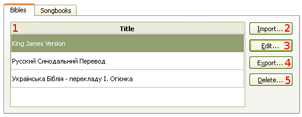
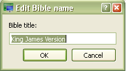
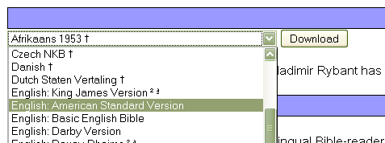
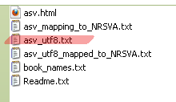

4.1 Managing Bibles
To manage Bibles:
This will open a dialog where managing will take place. Shortcut: Crtl+M
softProjector allows you to have as many Bible version as you would like to have.
Here you can import, edit, export or delete a Bible.

This will import a Bible from a softProjector Bible file (*.sps) and also from Unbound Bible files. See below how to import Unbound Bible files
A dialog box will appear where you can change the name or title of the Bible.

Export a Bible from the database that you want to share with someone else.
Delete a Bible that you do not want to use any more. You will not be allowed to delete any more Bibles, if only one Bible is left.
Importing Unbound Bibles
1. Go to http://unbound.biola.edu/
web site.
2. Click Downloads.
3. Select which Bible version to download

4. Click "Download" button and save the *.zip file.
5. Locate downloaded zip archive file and extract its content.
6. From Manage Database dialog, click on "Import" button
7. Select a file that ends with "_utf8.txt". All other files, softProjector
will not be able to import.
